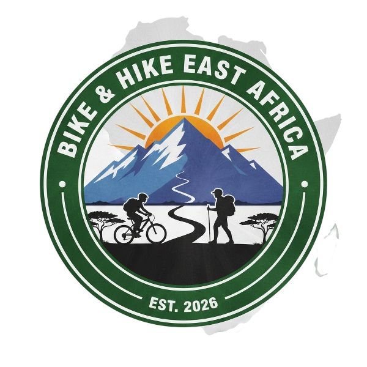
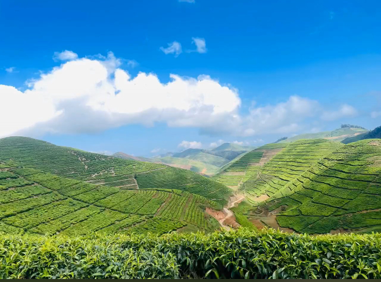
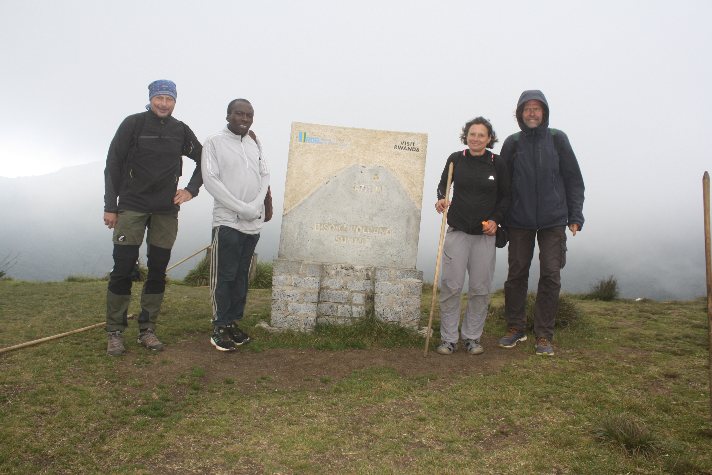
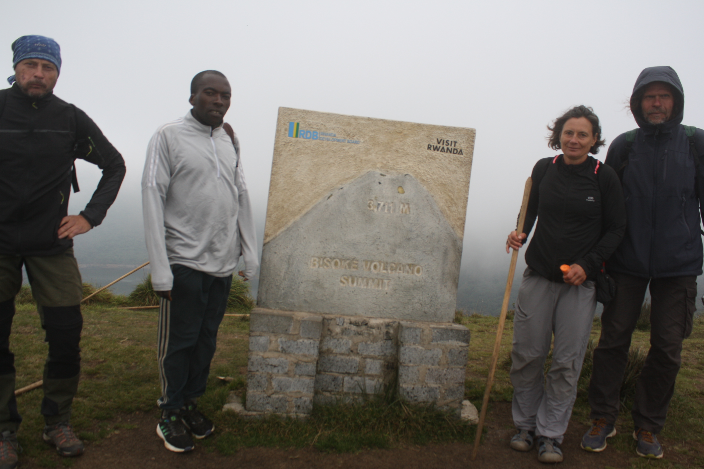
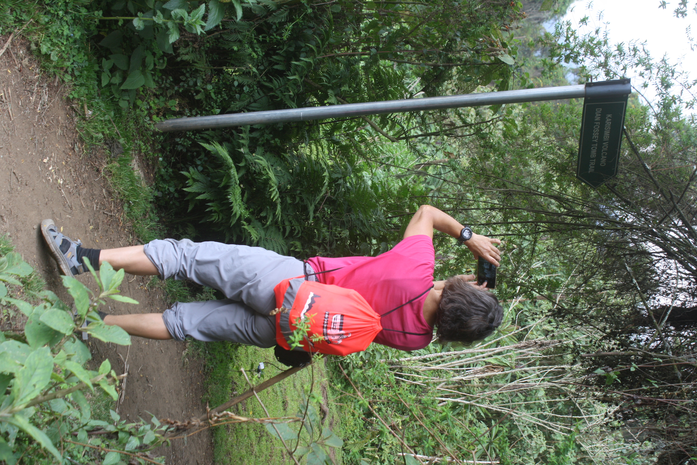
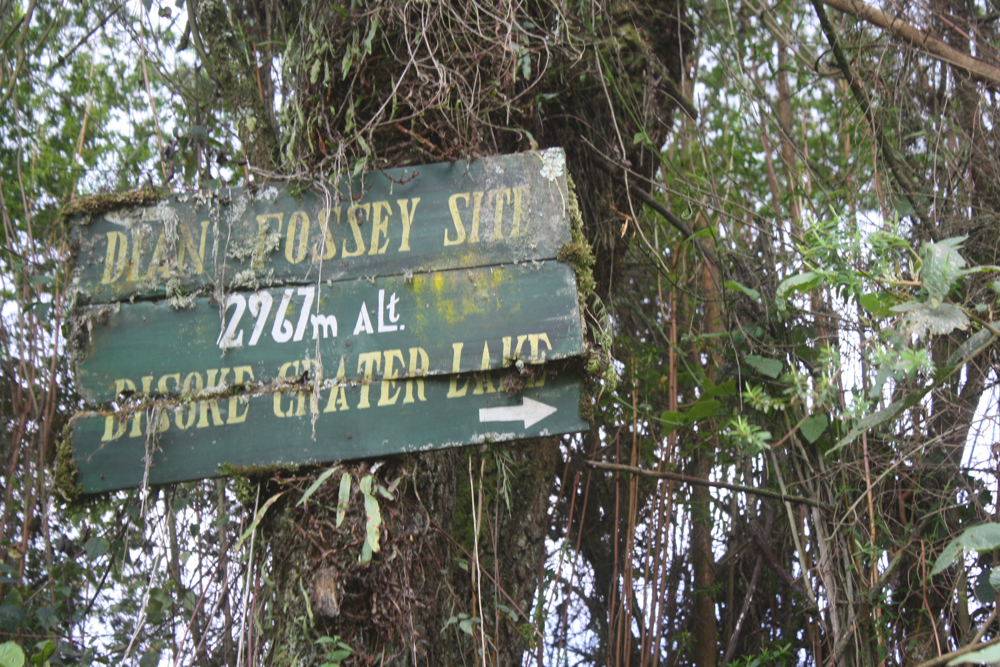
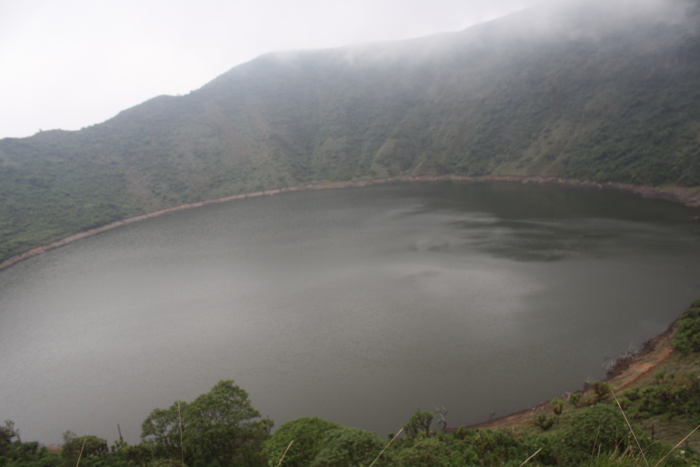

Bike & Hike
East Africa
Authentic adventures guided by locals — cycling, hiking, and exploring East Africa with real experiences.
View Tours

Bike & Hike East Africa is a local tourism company offering unforgettable adventures across East Africa. Our experienced guides know the best trails, hidden gems, and cultural experiences to make your journey authentic and memorable.
From cycling through scenic mountains to hiking in lush forests, we focus on providing safe, eco-friendly, and personalized tours that connect you with nature and local communities.
Book Your AdventureDiscover authentic adventures and cultural experiences across Rwanda and East Africa, guided by local experts.
A once-in-a-lifetime encounter with mountain gorillas, guided by professional rangers.
Explore the beauty of Lake Ruhondo and Lake Burera surrounded by volcanoes and culture.
Scenic cycling routes through villages, hills, and countryside suitable for all levels.
Guided hikes on volcanic landscapes offering breathtaking views and unforgettable nature experiences.
Relaxing boat cruises with stunning sunsets and lakeside scenery.
We are a locally owned tourism company committed to offering safe, authentic, and unforgettable experiences across East Africa.
Our tours are guided by local professionals who deeply understand the land, culture, and people.
We prioritize your safety with experienced guides, well-planned routes, and reliable equipment.
We work closely with local communities to ensure tourism benefits local families and traditions.
From wildlife to culture, every experience is real, meaningful, and carefully designed.
Everything you need to know before exploring East Africa with Bike & Hike. From safety and booking to experiences and preparation, we’ve answered the most common questions from our travelers.
No prior experience is required. Our tours are suitable for different fitness levels and guided professionally for comfort and safety.
Yes. Gorilla trekking follows strict conservation and safety guidelines led by professional park rangers and experienced guides.
Comfortable clothing, hiking shoes, sunscreen, water, and a camera are highly recommended for the best experience.
Absolutely. We personalize experiences depending on your interests, schedule, and preferred activities.
A glimpse of our biking, hiking, wildlife, and cultural experiences across East Africa.






Plan your journey with Bike & Hike East Africa. Click the button below to send your booking request instantly via WhatsApp.